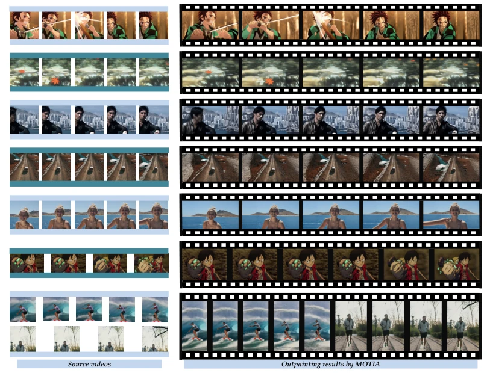
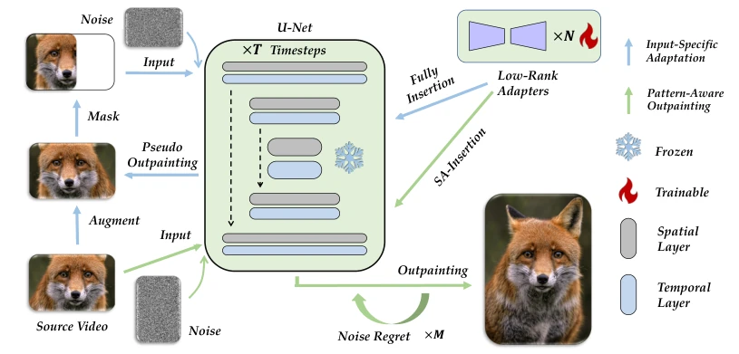
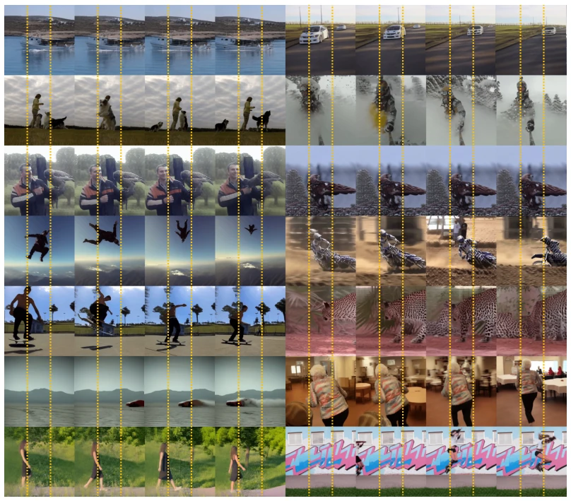
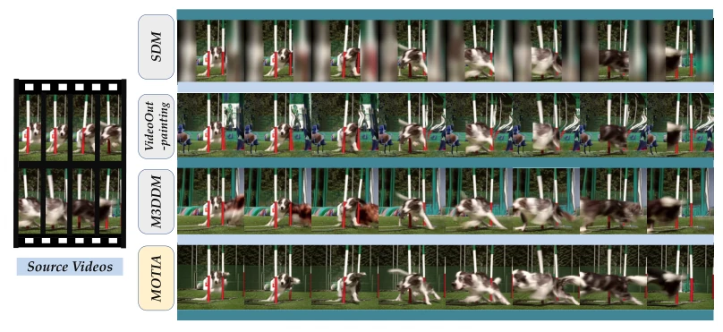
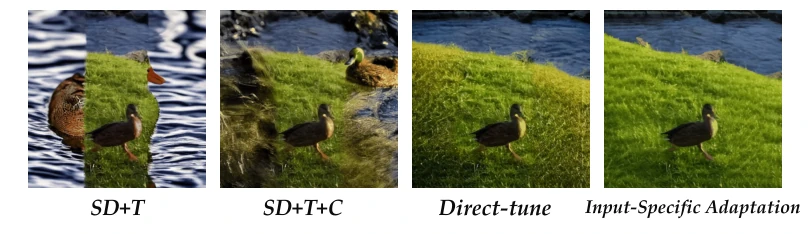
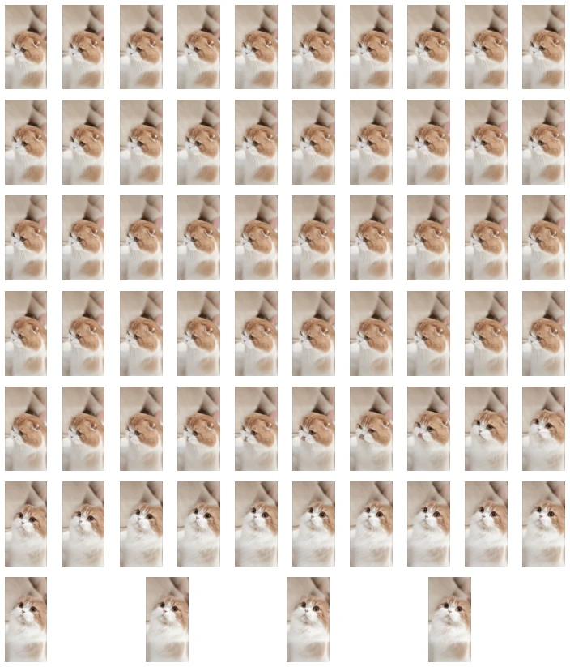
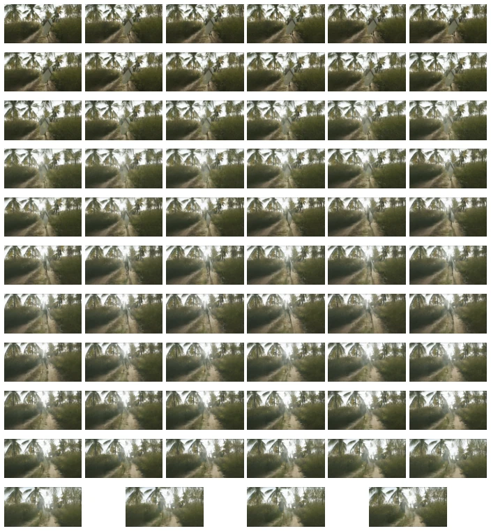
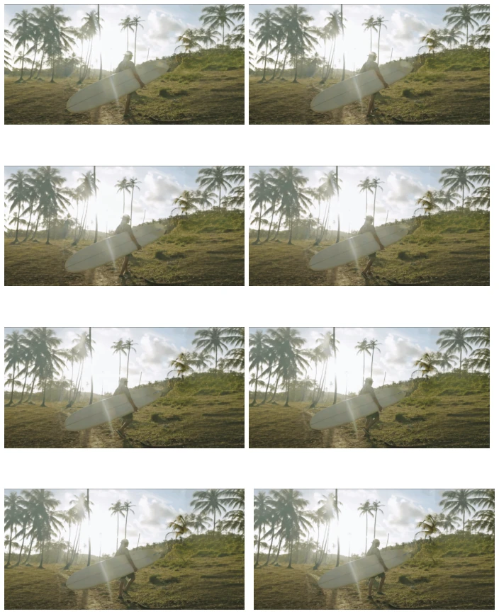
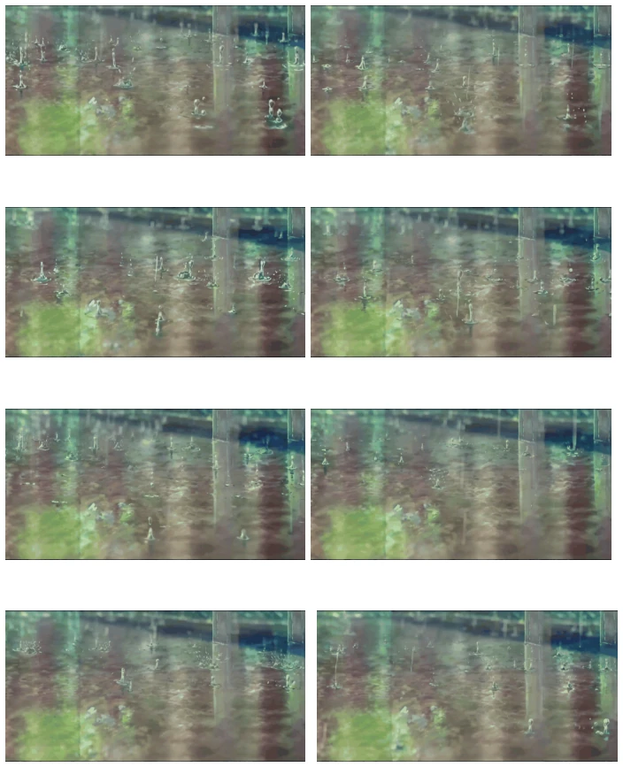
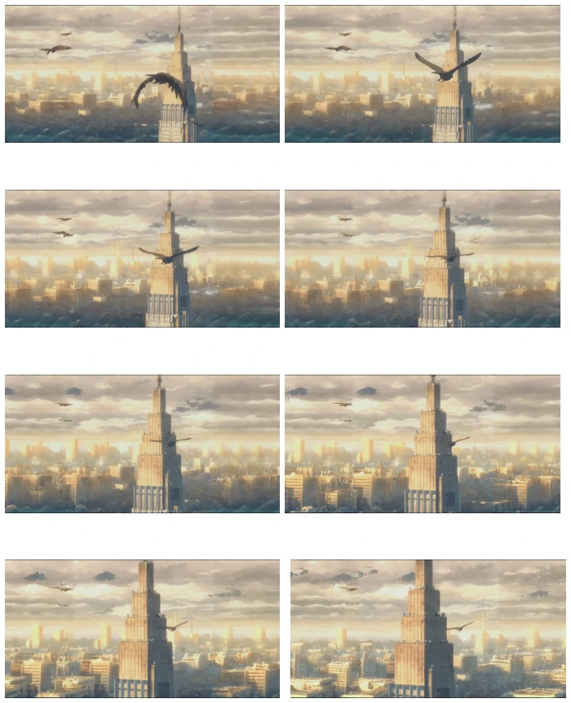

This paper enhances video outpainting. The core logic of MOTIA is somewhat 'opportunistic': since diffusion models are versatile but do not understand your specific video, we first use your video for 'practice' by employing a pseudo-outpainting task to enable the LoRA adapter to learn the texture and motion patterns of the source video before generating. This approach is indeed more flexible than rigidly trained large models like M3DDM [7], performing better especially on cross-domain videos. However, the drawbacks are evident: it is not true zero-shot, requiring adaptation for each video; while computational costs are controllable, it introduces an additional step. Furthermore, if the source video contains insufficient information, this method fails. Overall, it is a clever strategy that trades 'overfitting' to source data for generation quality, suitable for scenarios demanding high quality, though generalization still depends on the quality of the source video.
Video outpainting aims to address the issue of black bars appearing when videos with fixed aspect ratios are displayed on mobile devices, necessitating spatiotemporal consistency. Existing methods are primarily categorized into two types: optical flow methods [6], which are computationally complex and prone to blurriness; and diffusion-based methods [7], which yield good results but lack flexibility. Specifically, M3DDM [7], despite being trained on large-scale data, is constrained by fixed resolutions and mask types, and cannot process out-domain videos, often exhibiting edge blurring or generation failure. This is primarily because existing models fail to effectively capture intrinsic data-specific patterns unique to the source video, over-relying on pre-trained priors while neglecting the specific information of the input video.

Fig. 1: MOTIA is a high-quality flexible video outpainting pipeline, leveraging the intrinsic data-specific patterns of source videos and image/video generative prior for state-of-the-art performance. Quantitative metric improvement of MOTIA is signifi- cant (Table 1).
MOTIA consists of two stages. The first is Input-Specific Adaptation, where a pseudo-outpainting task is executed on the source video: the source video is randomly masked, and a lightweight LoRA adapter is trained to recover the masked regions, enabling the model to learn the motion and content patterns of the source video. This stage narrows the gap between standard generation and outpainting tasks by optimizing adapter parameters. The second stage is Pattern-Aware Outpainting, which combines learned patterns with diffusion priors. At the network level, 2D convolutions are dilated into pseudo-3D convolutions to process video features, and a pre-trained temporal module is integrated. Innovations include Spatial-Aware Insertion (SA-Insertion), which dynamically adjusts adapter weights based on the distance of feature positions from known areas, utilizing more learned patterns for nearby regions and more diffusion priors for distant regions, involving a spatial decay function in the formula; and Noise Regret, which periodically adds noise and re-denoises during early denoising cycles to mitigate denoising direction conflicts when merging known and unknown regions, preventing generation failure. The overall framework is based on the Stable Diffusion and ControlNet architectures, utilizing Blip to automatically generate text prompts.

Fig. 3: Workflow of MOTIA. Blue lines represent the workflow of input-specific adaptation, and green lines represent the workflow of pattern-aware outpainting.
实验Experiments
在 DAVIS 和 YouTube-VOS 基准上测试，对比 VideoOutpainting [6]、SDM [7] 和 M3DDM [7]。指标包括 PSNR、SSIM、LPIPS 和 FVD。MOTIA 在 SSIM、LPIPS 和 FVD 上显著优于 SOTA 方法，例如在 DAVIS 上 LPIPS 提升 21.27%。消融实验表明，输入特定适配和模式感知策略（SA+NR）均有效提升了性能。用户研究也显示 MOTIA 在视觉质量和真实感上更受青睐。此外，方法支持长视频外扩，通过采样短片段适配和时序协同去噪实现。
Evaluated on the DAVIS and YouTube-VOS benchmarks, comparing against VideoOutpainting [6], SDM [7], and M3DDM [7]. Metrics include PSNR, SSIM, LPIPS, and FVD. MOTIA significantly outperforms SOTA methods on SSIM, LPIPS, and FVD; for instance, LPIPS improved by 21.27% on DAVIS. Ablation studies indicate that both Input-Specific Adaptation and Pattern-Aware strategies (SA+NR) effectively enhance performance. User studies also demonstrate that MOTIA is preferred for visual quality and realism. Furthermore, the method supports long video outpainting, implemented via sampling short clips for adaptation and temporal collaborative denoising.

Fig. 4: Sample results of quantitative experiments. All videos are outpainted with a horizontal mask ratio of 0.66. Contents outside the yellow lines are outpainted by MOTIA.

Fig. 7: Qualitative comparison. Other methods outpainting the source video with a mask ratio of 0.6. MOTIA outpainting the source video with a larger mask ratio of 0.66 while achieving obviously better outpainting results.

Fig. 8: Visual examples of ablation study on the proposed input-specific adaptation.

Fig. 10: Results of MOTIA on long video outpainting, from 256 × 256 to 512 × 256.

Fig. 11: Results of MOTIA on long video outpainting, from 256 × 256 to 256 × 512.

Fig. 12: Results of MOTIA on high resolution video outpainting, from 512 × 512 to 512 × 1024.

Fig. 13: Results of MOTIA on high resolution video outpainting, from 512 × 512 to 512 × 1024.

Fig. 14: Results of MOTIA on high resolution video outpainting, from 512 × 512 to 512 × 1024.